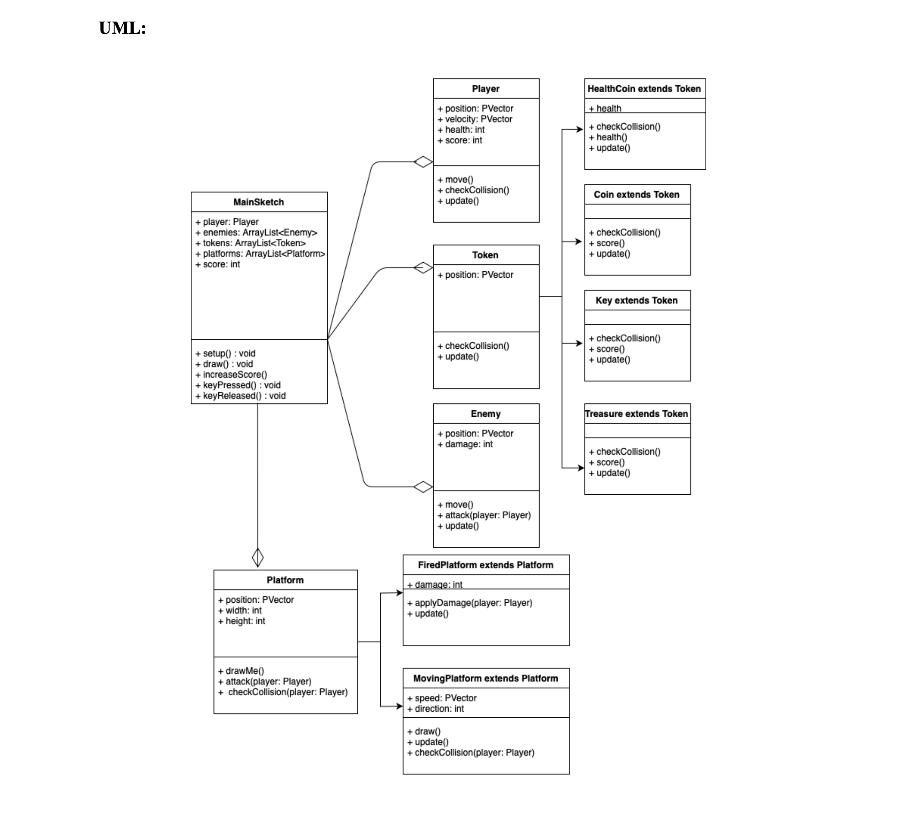
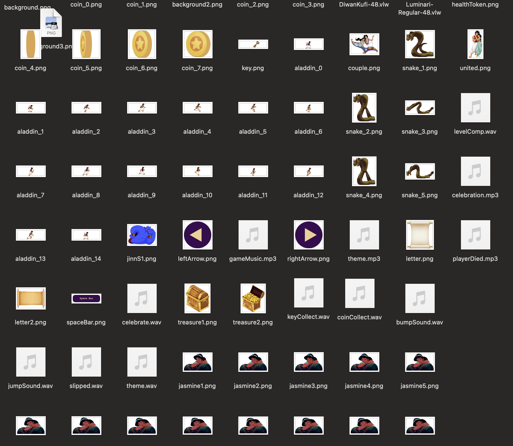
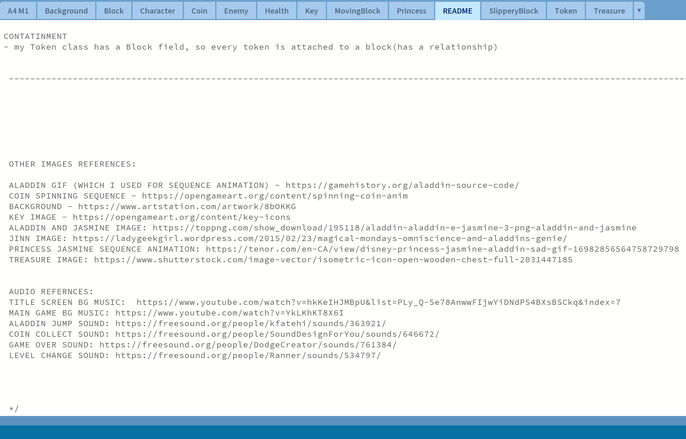
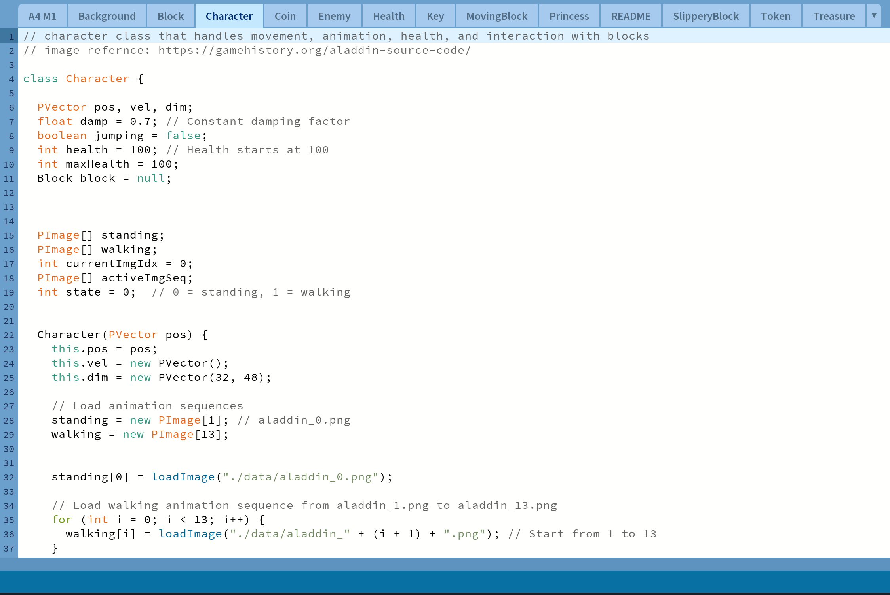
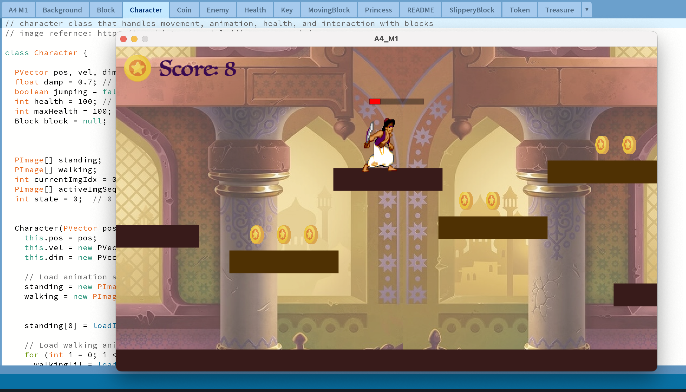

Week 1


In the early stage, I finalized the idea of creating a multi-level side-scrolling game inspired by Aladdin. I
developed a game proposal and storyboard to outline the narrative, level progression, and gameplay mechanics.
To pre-plan the code structure, I created a UML diagram mapping out the classes, fields, and methods, ensuring
encapsulation and object-oriented principles were applied from the start.
Week 2


My next step was designing the UI elements. For this project, I created some assets directly in Java, such as
simple UI shapes. The sequence animations for Aladdin’s running, jumping, and coin spinning were sourced from
free websites, which I adapted to fit the game. I also designed a few custom elements myself in Figma,
including the introduction letter image and health token. All assets, whether self-made, drawn in Java, or
collected online, were organized into a central “data” folder.
I also made sure to properly reference all borrowed sources, documenting image and audio credits in my README.
This ensured transparency about which parts I designed myself and which were adapted from external resources.
Week 3 & 4


I built the game using object oriented programming in Java, applying encapsulation to keep each class
structured and reusable. Clear comments documented functionality and made the code easy to maintain. This
organization allowed me to add features such as animations, sound effects, and level progression without
disrupting the core system.
Once the core features were programmed, I tested by playing through each level, refining collisions, platform
movement, and triggers. Encapsulation also supported efficient debugging, helping me quickly locate and fix
errors while improving polish and gameplay balance.